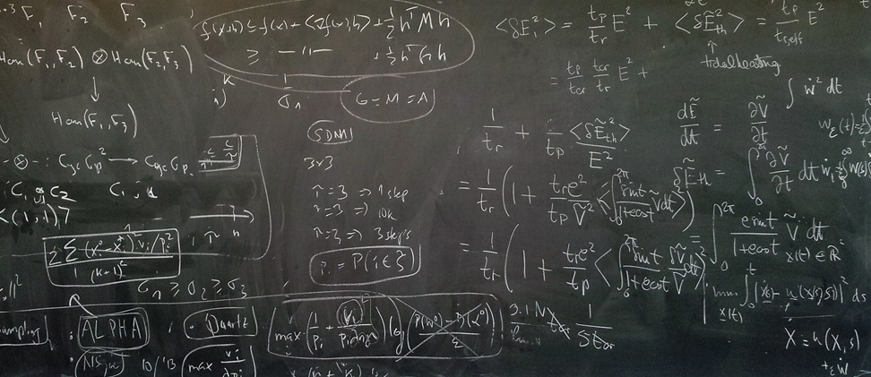

Applied Mathematics
Mathematics is a means of dealing with order, pattern, and number as seen in the world around us. The ability to compute, to think logically, and to take a reasoned approach to solve problems are highly valued in society and are characteristics of any educated person. Mathematics is not just a body of knowledge, but a process of analysis, reasoning, comparison, deduction, generalization, and problem-solving.
A mathematician’s stock in trade is the ability to solve problems and to explain the solutions to others. Having once determined what the right questions are, solving problems involves analyzing both concrete and abstract situations, relating them to mathematical ideas, and using mathematical techniques to work toward solutions. Explaining the solution involves pointing out what has been solved and why the solution is valid.
Majors in mathematics (BS) prepare for a wide variety of careers. Some enter graduate school or professional schools and prepare for careers in such fields as college teaching, consulting, research and development, law, medicine, and business administration. Others take positions in government agencies, industrial laboratories, information management firms, or business organizations. All of them spend much time communicating with colleagues about the problems they are solving as they continue to learn more mathematics and share mathematical ideas with others.
Students who complete the Applied & Computational Mathematics emphasis will demonstrate facility in computer programming, data processing, databases, numerical simulation, scientific visualization, and virtual experimentation. Write, compile and execute numerical algorithms in a low-level language, such as C/C++, as well as develop I/O wrappers for standard numerical libraries in a common scripting language, such as Python.
The Master of Science in Mathematics is designed to prepare students for positions in business and industry. It also provides preparation for further graduate study leading to a doctoral degree. The PhD program prepares students for a career in research and teaching at the university level or in basic research in a non-academic setting.
Learn more about the Mathematical Finance Club on the clubs page.
Math Degrees:
| Degree | Program | Academic Advisement | Requirements |
|---|---|---|---|
| Minor | Mathematics | Physical & Mathematical Sciences | 20-21 Credits |
| BS | Mathematics | Physical & Mathematical Sciences | 54 Credits |
| BS | Mathematics: Applied & Computation Mathematics | Physical & Mathematical Sciences | 70 Credits |
| MS | Mathematics | Physical & Mathematical Sciences | 30 Credits |
| PhD | Mathematics | Physical & Mathematical Sciences | 54 Credits |